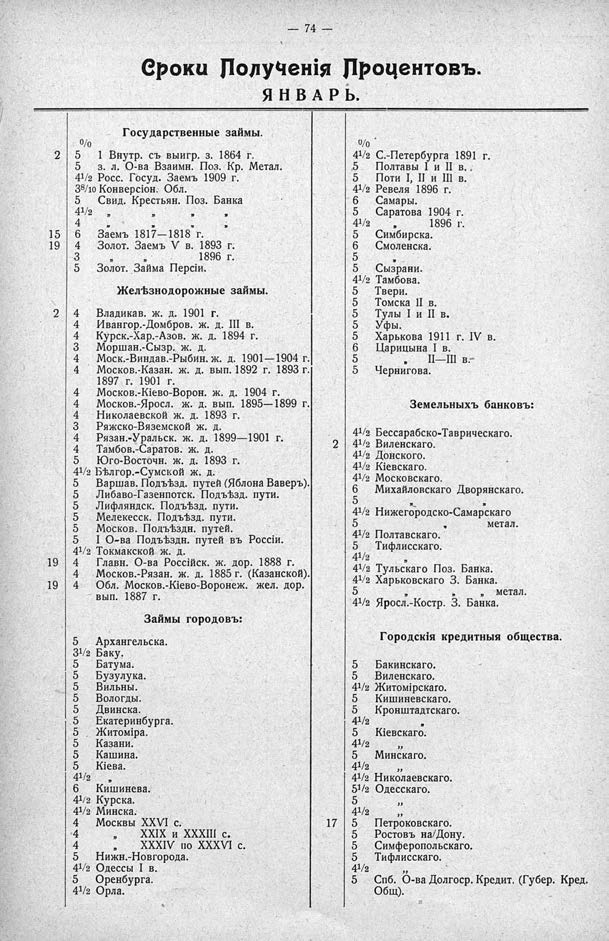

Лист источника 120
Скан

Распознанный текст
— 74 —
Сроки Полученія Процентовъ.
Я Н В А Р Ь.
Государственные займы.
о/о
5 1 Внутр. съ выигр. з. 1864 г. 2
5 з. л. О-ва Взаимн. Поз. Кр. Метал.
4 1/2 Росс. Госуд. Заемъ 1909 г.
3 8/10 Конверсіон. Обл.
5 Свид. Крестьян. Поз. Банка
4 1/2 „ „ „
4 „ „ „
6 Заемъ 1817—1818 г. 15
4 Золот. Заемъ V в. 1893 г. 19
3 „ „ 1896 г.
5 Золот. Займа Персіи.
Желѣзнодорожные займы.
4 Владикав. ж. д. 1901 г. 2
4 Ивангор.-Домбров. ж. д. III в.
4 Курск.-Хар.-Азов. ж. д. 1894 г.
3 Моршан.-Сызр. ж. д.
4 Моск.-Виндав.-Рыбин. ж. д. 1901—1904 г.
4 Москов.-Казан. ж. д. вып. 1892 г. 1893 г.
1897 г. 1901 г.
4 Москов.-Кіево-Ворон. ж. д. 1904 г.
4 Москов.-Яросл. ж. д. вып. 1895—1899 г.
4 Николаевской ж. д. 1893 г.
3 Ряжско-Вяземской ж. д.
4 Рязан.-Уральск. ж. д. 1899—1901 г.
4 Тамбов.-Саратов. ж. д.
5 Юго-Восточн. ж. д. 1893 г.
4 1/2 Бѣлгор.-Сумской ж. д.
5 Варшав. Подъѣзд. путей (Яблона Ваверъ).
5 Либаво-Газенпотск. Подъѣзд. пути.
5 Лифляндск. Подъѣзд. пути.
5 Мелекесск. Подъѣзд. пути.
5 Москов. Подъѣздн. путей.
5 I О-ва Подъѣздн. путей въ Россіи.
4 1/2 Токмакской ж. д.
4 Главн. О-ва Россійск. ж. дор. 1888 г. 19
4 Москов.-Рязан. ж. д. 1885 г. (Казанской).
4 Обл. Москов.-Кіево-Воронеж. жел. дор. 19
вып. 1887 г.
Займы городовъ:
5 Архангельска.
3 1/2 Баку.
5 Батума.
5 Бузулука.
5 Вильны.
5 Вологды.
5 Двинска.
5 Екатеринбурга.
5 Житоміра.
5 Казани.
5 Кашина.
5 Кіева.
4 1/2 „
6 Кишинева.
4 1/2 Курска.
4 1/2 Минска.
4 Москвы XXVI с.
4 „ XXIX и XXXIII с.
4 „ XXXIV по XXXVI с.
5 Нижн.-Новгорода.
4 1/2 Одессы I в.
5 Оренбурга.
4 1/2 Орла.
о/о
4 1/2 С.-Петербурга 1891 г.
5 Полтавы I и II в.
5 Поти I, II и III в.
4 1/2 Ревеля 1896 г.
6 Самары.
5 Саратова 1904 г.
4 1/2 „ 1896 г.
5 Симбирска.
6 Смоленска.
5 „
5 Сызрани.
4 1/2 Тамбова.
5 Твери.
5 Томска II в.
5 Тулы I и II в.
5 Уфы.
5 Харькова 1911 г. IV в.
6 Царицына I в.
5 „ II—III в.
5 Чернигова.
Земельныхъ банковъ:
4 1/2 Бессарабско-Таврическаго.
4 1/2 Виленскаго. 2
4 1/2 Донского.
4 1/2 Кіевскаго.
4 1/2 Московскаго.
6 Михайловскаго Дворянскаго.
5 „ „
4 1/2 Нижегородско-Самарскаго
5 „ „ метал.
4 1/2 Полтавскаго.
5 Тифлисскаго.
4 1/2 „
4 1/2 Тульскаго Поз. Банка.
4 1/2 Харьковскаго З. Банка.
5 „ „ метал.
4 1/2 Яросл.-Костр. З. Банка.
Городскія кредитныя общества.
5 Бакинскаго.
5 Виленскаго.
4 1/2 Житомірскаго.
5 Кишиневскаго.
5 Кронштадтскаго.
4 1/2 „
5 Кіевскаго.
4 1/2 „
5 Минскаго.
4 1/2 „
4 1/2 Николаевскаго.
5 1/2 Одесскаго.
5 „
4 1/2 „
5 Петроковскаго. 17
5 Ростовъ на/Дону.
5 Симферопольскаго.
5 Тифлисскаго.
4 1/2
5 Спб. О-ва Долгоср. Кредит. (Губер. Кред.
Общ).